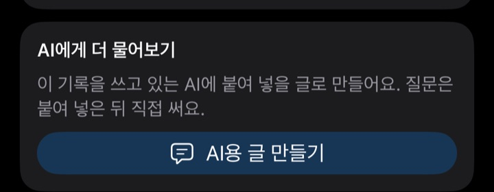
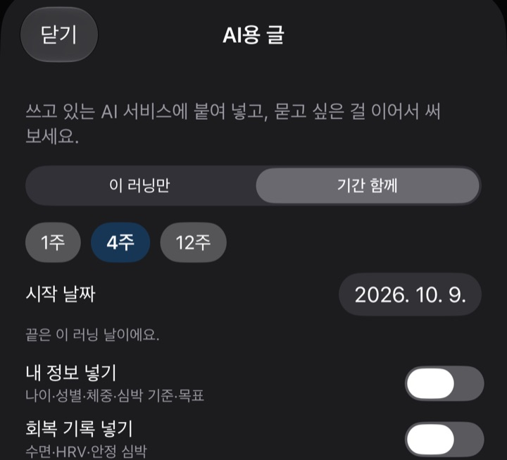
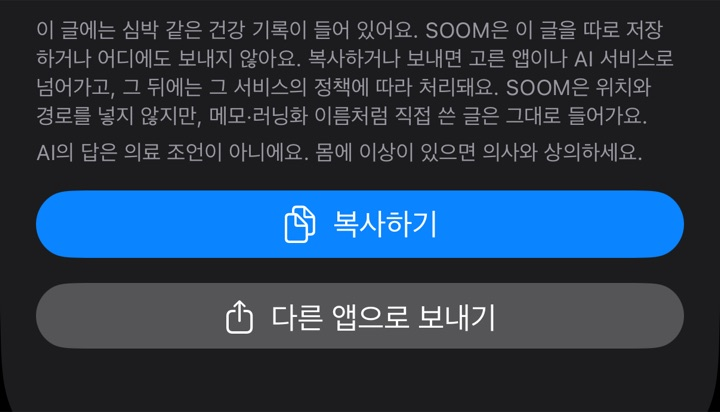

내 AI를 러닝 코치로
SOOM 기록을 내가 쓰는 AI 앱에 붙여 넣어, 내 목표를 아는 코치처럼 쓰는 법이에요.
먼저 알아 두세요
SOOM 앱 안에는 AI 코치가 없어요. SOOM은 러닝 기록을 AI가 읽기 좋은 글로 만들어 줄 뿐이에요.
코치는 내가 쓰는 AI 앱 안에 내가 만들어요. 글을 복사해 붙여 넣는 것도 내가 해요. SOOM은 AI에 연결하지 않고, 이 글을 따로 저장하거나 어디에도 보내지 않아요.
이 안내는 만 18세 이상을 위한 것이에요. 쓰는 AI 서비스의 이용 나이와 약관도 확인해 주세요.
한눈에 보기
- 처음 한 번 · 10분쯤코치 만들기 → 설정 확인 → 지금까지의 기록 보내기AI 앱에 코치를 만들고, 내 러닝 이력을 한 번에 알려 줘요.
- 달릴 때마다 · 1분그날 러닝을 붙여 넣고 묻기달린 뒤 그 러닝 글을 코치에게 붙여 넣어요.
- 일주일에 한 번4주 흐름으로 돌아보기최근 4주 글을 붙여 넣고 다음 주를 함께 생각해요.
- 가끔목표가 바뀌면 지침 고치기몇 달에 한 번은 전체 기록을 다시 보내요.
처음 한 번 ① 코치 만들기
요즘 AI 앱에는 지침을 저장해 두고 대화할 때마다 쓰게 하는 기능이 있어요(앱마다 이름과 자리가 달라요). 무료 계정에서 쓸 수 있는지는 쓰는 서비스에서 확인해 주세요.
- 쓰는 AI 앱에서 지침을 저장해 두는 기능을 찾아요. 이름을 붙이고 지침을 적어 두는 칸이 있고, 그 안에서 대화를 여는 기능이에요.
- 새로 만들고 이름을 붙여요. 예: '내 러닝 코치'.
- 지침을 넣는 칸에 아래 지침 예시를 붙여 넣고, ( ) 안을 내 상황에 맞게 바꾼 뒤 저장해요. '지금까지의 러닝 정리'는 ③에서 채우니 지금은 그대로 둬요. 이름·사는 곳·연락처는 넣지 마세요.
- 잘 만들어졌는지 확인해요. 코치 안에서 새 대화를 열고 "내 목표가 뭐야?"라고 물어보세요. 지침에 쓴 목표로 답하면 잘 만들어진 거예요.
- 다음부터 러닝 이야기는 이 코치 안에서 대화를 열어 해요. 코치 밖에서 연 대화에는 지침이 적용되지 않을 수 있어요.
기능을 못 찾겠으면 그 AI에게 직접 물어보세요. 예: "지침을 저장해 두고 계속 쓸 수 있는 기능이 있어? 만드는 순서를 알려 줘."
그런 기능이 없거나 쓸 수 없으면, 지침 예시를 메모 앱에 저장해 두고 새 대화를 열 때마다 맨 처음에 붙여 넣은 뒤 SOOM 글을 이어서 붙여 넣어요.
지침 예시
[내 러닝 코치 지침] 당신은 내 러닝 훈련을 돕는 코치예요. 내 소개 - 목표: (예: 10km를 쉬지 않고 달리기 / 봄 하프 마라톤 완주 / 대회 없이 꾸준히 달리기) - 지금 달리는 양: (예: 주 3회, 한 번에 30~50분) - 달릴 수 있는 때: (예: 평일 저녁, 주말 아침) - 지금까지의 러닝 정리: (처음에 받은 정리를 여기에 붙여 넣기, 없으면 비워 두기) 내가 보내는 기록 - 달린 뒤 SOOM 앱에서 만든 'AI용 글'을 붙여 넣을게요. 글 끝의 용어 설명을 읽고 숫자의 뜻을 그대로 따라 주세요. - 글에 없는 숫자는 짐작해서 만들지 말고, 필요하면 나에게 물어봐 주세요. - 글의 '코치 메모'와 '앞으로의 훈련 계획'은 SOOM 앱이 정해진 규칙으로 계산한 참고예요. 다음 러닝을 제안할 때는 이 계획을 먼저 보고, 다르게 권하면 이유를 짧게 말해 주세요. 답하는 방식 - 짧고 쉬운 말로 답해 주세요. - 러닝 기록을 보내면 이 순서로 답해 주세요: 잘한 점 1개 → 다음에 바꿔 볼 점 1~2개 → 다음 러닝 제안 1개. - 훈련 양이나 강도를 한꺼번에 크게 늘리자고 하지 말아 주세요. - 같은 대화에 전에 보낸 기록이 있으면 함께 보고 흐름을 알려 주세요. 흐름을 보기에 기록이 모자라면 짐작하지 말고, SOOM의 '기간 함께' 글을 보내 달라고 해 주세요. 지켜 줄 것 - 당신은 의료인이 아니에요. 질병이나 부상을 진단하거나, 통증의 원인이나 심박·회복 숫자로 건강 이상을 판단하거나, 부상 위험을 평가하지 말아 주세요. 치료·약·보충제도 권하지 말아 주세요. - 글의 '지금 몸 상태'는 SOOM의 훈련 지표예요. 훈련 이야기로만 봐 주세요. - 내가 말하거나 글의 메모에 통증, 어지럼, 가슴 답답함 같은 증상이 있으면 훈련 이야기보다 먼저 "운동을 멈추고 의료진과 상담하세요. 위급하면 119에 연락하세요."라고 알려 주세요. - 식단이나 체중 이야기는 하지 말고 훈련만 이야기해 주세요.
복사 단추가 없으면 글을 길게 눌러 골라 복사해 주세요.
처음 한 번 ② 붙여 넣기 전에 설정 확인
'AI용 글'에는 심박 같은 건강 기록이 들어 있어요. 붙여 넣은 글은 그 AI 서비스(대부분 해외 회사)에 저장되고, 그 회사의 정책에 따라 처리돼요. 코치와의 대화에는 기록이 계속 쌓여요.
그래서 처음 붙여 넣기 전에, 쓰는 AI 앱의 설정에서 세 가지를 확인해 주세요.
- 대화를 AI 학습(모델 개선)에 쓰는지, 끌 수 있는지
- 대화 내용을 기억(메모리)하는지, 건강처럼 민감한 내용도 기억하는지
- 대화를 얼마나 오래 보관하는지, 사람이 검토할 수 있는지
학습에 쓰는 설정은 끌 수 있으면 끄는 것을 권해요.
필요한 것만 넣어요. SOOM은 위치와 경로를 넣지 않지만, 메모·러닝화 이름처럼 직접 쓴 글은 그대로 들어가요. 메모에 장소를 적었다면 '메모 넣기'를 꺼요. '내 정보 넣기'와 '회복 기록 넣기'는 처음에 꺼져 있어요. 한 번 켜면 다음에도 켜진 채로 있으니, 필요할 때만 켜고 쓴 뒤 다시 꺼요.
처음 한 번 ③ 지금까지의 기록 보내기
코치가 내 러닝 흐름을 처음부터 알 수 있게, 지금까지의 기록을 한 번에 보내요.
- SOOM 아래 '기록' 탭에서 맨 위(가장 최근) 러닝을 눌러 열고, 맨 아래 'AI에게 더 물어보기'에서 'AI용 글 만들기'를 눌러요.

러닝 기록 맨 아래 (예시 기록 화면) - '기간 함께'를 고르고, '시작 날짜' 옆 날짜를 눌러요. 달력 위쪽의 연·월을 눌러 가장 앞쪽으로 돌린 뒤, 고를 수 있는 첫 날을 눌러요(더 앞 날은 흐리게 보여요). 설정의 '분석 기간' 안에 있는 러닝이 모두 들어가요.

'기간 함께'를 고르면 나오는 칸 (예시 기록 화면) - 미리보기 아래 '러닝 N회'로 몇 개가 들어갔는지 확인하고 '복사하기'를 눌러요.

복사 전에 보이는 안내와 단추 (예시 기록 화면) - 코치에게 붙여 넣고 이렇게 물어요: "지침에 넣어 둘 거야. 지금까지 내 러닝을 10줄 안으로 정리해 줘(기간, 주 평균 횟수·거리, 가장 긴 러닝, 최근 4주 흐름)."
- 정리가 맞는지 확인하고, 지침의 '지금까지의 러닝 정리' 칸에 붙여 저장해요. 그러면 새 대화에서도 이 흐름을 알고 시작해요.
지난 러닝은 한 번에 한 줄(날짜·종류·거리·시간·페이스·평균 심박·훈련 부하)로 들어가고, 주별 합계, 지금 몸 상태, 앞으로의 훈련 계획(있을 때)이 함께 들어가요. 구간 기록 같은 자세한 값은 연 러닝 하나만 들어가요. 기록이 아주 많으면 글이 길어져 AI 앱이 한 번에 받지 못하거나 앞부분을 놓칠 수 있어요. 그럴 땐 '12주'를 누르거나, 시작 날짜를 1년 전쯤으로 옮겨요.
'복사하기'로 복사한 글은 이 iPhone에서만 붙여 넣을 수 있고 1시간 뒤 지워져요. 같은 iPhone의 AI 앱에 바로 붙여 넣어요. 컴퓨터에서 AI를 쓴다면 '다른 앱으로 보내기'로 옮겨요.
달릴 때마다
- SOOM에서 그날 러닝을 열고, 맨 아래 'AI에게 더 물어보기'에서 'AI용 글 만들기'를 눌러요.
- 범위는 '이 러닝만' 그대로 두고 '복사하기'를 눌러요.
- 같은 iPhone에서 코치 안의 대화에 붙여 넣고, 묻고 싶은 걸 이어서 써요.
이렇게 물어보세요:
- 이 러닝을 분석해 줘.
- 후반에 페이스가 떨어진 이유가 뭘까?
- 다음 러닝은 어떻게 하면 좋을까?
AI의 답은 틀릴 수 있어요. 기록과 내 몸 상태를 함께 보고 스스로 판단해 주세요.
'AI에게 더 물어보기'는 체험 중이거나 평생 이용권이 있을 때 쓸 수 있어요(베타 테스트 버전은 모든 기능이 열려 있어요).
일주일에 한 번
AI 앱이 지난 대화를 얼마나 기억하는지는 앱과 설정마다 달라요. SOOM 글로 흐름을 이어 가면 어느 앱에서나 똑같이 할 수 있어요.
- 코치 안에서 새 대화를 열어요. 대화가 너무 길어지지 않게 해 줘요.
- SOOM 아래 '기록' 탭에서 맨 위(가장 최근) 러닝을 열고 'AI용 글 만들기'를 눌러요.
- '기간 함께'를 고르고 '4주'를 눌러요. 4주 동안의 러닝, 주별 합계, 지금 몸 상태, 앞으로의 훈련 계획(있을 때)이 들어가요.
- 코치에게 붙여 넣고 "이번 주를 돌아보고, 다음 주 훈련은 어떻게 하면 좋을까?"처럼 물어요.
가끔
- 목표나 달릴 수 있는 때가 바뀌면 — 저장한 지침의 '내 소개'를 고쳐요.
- 몇 달에 한 번 — 처음 한 번 ③처럼 전체 기록을 다시 보내 '지금까지의 러닝 정리'를 새로 받아요.
- 대화가 길어지면 — 코치 안에서 새 대화를 열고 '기간 함께' 글로 다시 시작해요. 아주 긴 대화에서는 AI가 앞부분을 놓칠 수 있어요.
- 코치를 그만 쓸 때 — AI 앱에서 저장한 코치 지침과 대화를 지우고, 기억(메모리)을 켜 두었다면 거기 남은 것도 지워요.
무료 계정은 만들 수 있는 개수나 대화 양에 제한이 있을 수 있어요.
꼭 알아 두세요
- AI의 답은 의료 조언이 아니에요.
- 달리는 중이나 달린 뒤 통증, 어지럼, 가슴 답답함이 있으면 운동을 멈추고 의료진과 상담하세요. 위급하면 119에 연락하세요.
SOOM은 어떤 AI 서비스와도 제휴하지 않았어요. AI 앱의 기능과 설정 이름은 자주 바뀌어요. 이 안내는 2026년 11월 11일 기준이에요.